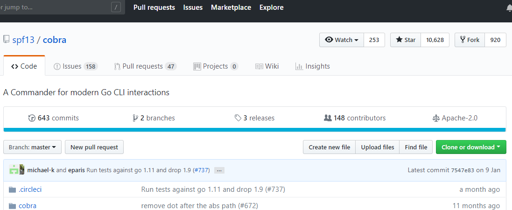
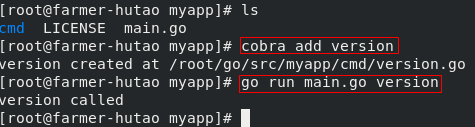
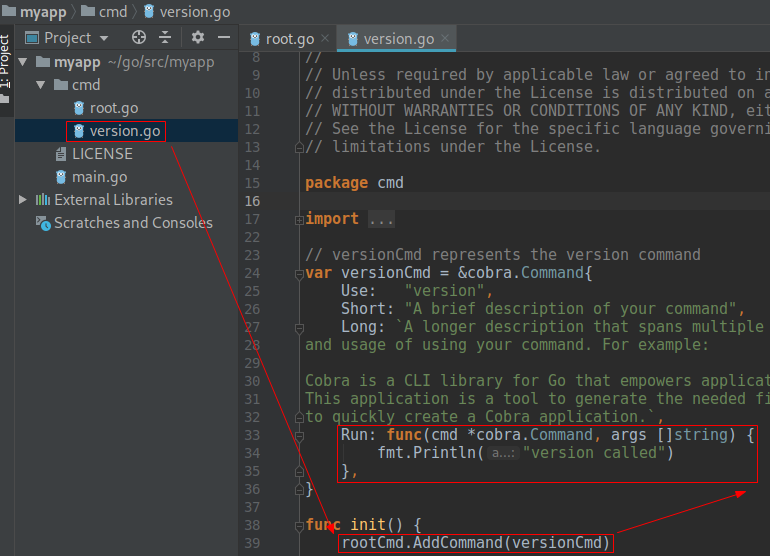

调度程序启动前逻辑
1. 概述
前面提到过scheduler程序可以分为三层，第一层是调度器启动前的逻辑，包括命令行参数解析、参数校验、调度器初始化等一系列逻辑。这个部分我不会太详细地介绍，因为这些代码位于调度框架之前，相对比较枯燥无趣，讲多了磨灭大伙对源码的兴趣～
2. cobra和main
剧透一下先，如果你之前没有用过cobra，那么在第一次见到cobra之后，很可能以后你自己写的程序，开发的小工具会全部变成cobra风格。我最近半年写的命令行程序就全部是基于cobra+pflag的。cobra有多优雅呢，且听我慢慢道来～
2.1. cobra是啥

从github上我们可以找到这个项目，截至今天已经有上万个star，一百多个contributors，可见来头不小！Cobra官方描述是：
Cobra is both a library for creating powerful modern CLI applications as well as a program to generate applications and command files.
也就是这个意思：Cobra既是一个创建强大的现代化命令行程序的库，又是一个用于生成应用和命令行文件的程序。有很多流行的Go项目用了Cobra，其中当然包括我们最最熟知的k8s和docker，大致列出来有这些：
- Kubernetes
- Hugo
- rkt
- etcd
- Moby (former Docker)
- Docker (distribution)
- OpenShift
- Delve
- GopherJS
- CockroachDB
- Bleve
- ProjectAtomic (enterprise)
- Giant Swarm's gsctl
- Nanobox/Nanopack
- rclone
- nehm
- Pouch
如果你是云计算方向的攻城狮，上面半数项目应该都耳熟能详～
2.2. 使用cobra
下面我们实践一下cobra，先下载这个项目编译一下：
# 如果你的网络很给力，那么下面这个命令就够了；
go get -u github.com/spf13/cobra/cobra
# 如果你的网络不给力，那就下载cobra的zip包，丢到GOPATH下对应目录，然后解决依赖，再build
于是我们得到了这样一个可执行文件及项目源码：

我们试一下这个命令：cobra init ${project-name}
[root@farmer-hutao src]# cobra init myapp
Your Cobra application is ready at
/root/go/src/myapp
Give it a try by going there and running `go run main.go`.
Add commands to it by running `cobra add [cmdname]`.
[root@farmer-hutao src]# ls myapp/
cmd LICENSE main.go
[root@farmer-hutao src]# pwd
/root/go/src
如上，本地可以看到一个main.go和一个cmd目录，这个cmd和k8s源码里的cmd是不是很像～
main.go里面的代码很精简，如下：
main.go
package main
import "myapp/cmd"
func main() {
cmd.Execute()
}
这里注意到调用了一个cmd的Execute()方法，我们继续看cmd是什么：

如上图，在main.go里面import了myapp/cmd，也就是这个root.go文件。所以Execute()函数就很好找了。在Execute里面调用了rootCmd.Execute()方法，这个rootCmd是*cobra.Command类型的。我们关注一下这个类型。
下面我们继续使用cobra命令给myapp添加一个子命令：

如上，我们的程序可以使用version子命令了！我们看一下源码发生了什么变化：

多了一个version.go，在这个源文件的init()函数里面调用了一个rootCmd.AddCommand(versionCmd)，这里可以猜到是根命令下添加一个子命令的意思，根命令表示的就是我们直接执行这个可执行文件，子命令就是version，放在一起的感觉就类似大家使用kubectl version的感觉。
另外注意到这里的Run属性是一个匿名函数，这个函数中输出了“version called”字样，也就是说我们执行version子命令的时候其实是调用到了这里的Run.
最后我们实践一下多级子命令：


套路也就这样，通过serverCmd.AddCommand(createCmd)调用后就能够把*cobra.Command类型的createCmd变成serverCmd的子命令了，这个时候我们玩起来就像kubectl get pods.
行，看到这里我们回头看一下scheduler的源码就能找到main的逻辑了。
3. Scheduler的main
我们打开文件：cmd/kube-scheduler/scheduler.go可以找到scheduler的main()函数，很简短，去掉枝干后如下：
cmd/kube-scheduler/scheduler.go:34
func main() {
command := app.NewSchedulerCommand()
if err := command.Execute(); err != nil {
fmt.Fprintf(os.Stderr, "%v\n", err)
os.Exit(1)
}
}
看到这里猜都能猜到kube-scheduler这个二进制文件在运行的时候是调用了command.Execute()函数背后的那个Run，那个Run躲在command := app.NewSchedulerCommand()这行代码调用的NewSchedulerCommand()方法里，这个方法一定返回了一个*cobra.Command类型的对象。我们跟进去这个函数，看一下是不是这个样子：
cmd/kube-scheduler/app/server.go:70
/ NewSchedulerCommand creates a *cobra.Command object with default parameters
func NewSchedulerCommand() *cobra.Command {
cmd := &cobra.Command{
Use: "kube-scheduler",
Long: `The Kubernetes scheduler is a policy-rich, topology-aware,
workload-specific function that significantly impacts availability, performance,
and capacity. The scheduler needs to take into account individual and collective
resource requirements, quality of service requirements, hardware/software/policy
constraints, affinity and anti-affinity specifications, data locality, inter-workload
interference, deadlines, and so on. Workload-specific requirements will be exposed
through the API as necessary.`,
Run: func(cmd *cobra.Command, args []string) {
if err := runCommand(cmd, args, opts); err != nil {
fmt.Fprintf(os.Stderr, "%v\n", err)
os.Exit(1)
}
},
}
return cmd
}
如上，同样我先删掉了一些枝干代码，剩下的可以很清楚地看到，schduler启动时调用了runCommand(cmd, args, opts)，这个函数在哪里呢，继续跟一下：
cmd/kube-scheduler/app/server.go:117
// runCommand runs the scheduler.
func runCommand(cmd *cobra.Command, args []string, opts *options.Options) error {
c, err := opts.Config()
stopCh := make(chan struct{})
// Get the completed config
cc := c.Complete()
return Run(cc, stopCh)
}
如上，可以看到这里是处理配置问题后调用了一个Run()函数，Run()的作用是基于给定的配置启动scheduler，它只会在出错时或者channel stopCh被关闭时才退出，代码主要部分如下：
cmd/kube-scheduler/app/server.go:167
// Run executes the scheduler based on the given configuration. It only return on error or when stopCh is closed.
func Run(cc schedulerserverconfig.CompletedConfig, stopCh <-chan struct{}) error {
// Create the scheduler.
sched, err := scheduler.New(cc.Client,
cc.InformerFactory.Core().V1().Nodes(),
stopCh,
scheduler.WithName(cc.ComponentConfig.SchedulerName))
// Prepare a reusable runCommand function.
run := func(ctx context.Context) {
sched.Run()
<-ctx.Done()
}
ctx, cancel := context.WithCancel(context.TODO())
defer cancel()
go func() {
select {
case <-stopCh:
cancel()
case <-ctx.Done():
}
}()
// Leader election is disabled, so runCommand inline until done.
run(ctx)
return fmt.Errorf("finished without leader elect")
}
可以看到这里最终是要跑sched.Run()这个方法来启动scheduler，sched.Run()方法已经在pkg下，具体位置是pkg/scheduler/scheduler.go:276，也就是scheduler框架真正运行的逻辑了。于是我们已经从main出发，找到了scheduler主框架的入口，具体的scheduler逻辑我们下一讲再来仔细分析。
最后我们来看一下sched的定义，在linux里我们经常会看到一些软件叫做什么什么d，d也就是daemon，守护进程的意思，也就是一直跑在后台的一个程序。这里的sched也就是“scheduler daemon”的意思。sched的其实是*Scheduler类型，定义在：
pkg/scheduler/scheduler.go:58
// Scheduler watches for new unscheduled pods. It attempts to find
// nodes that they fit on and writes bindings back to the api server.
type Scheduler struct {
config *factory.Config
}
如上，注释也很清晰，说Scheduler watch新创建的未被调度的pods，然后尝试寻找合适的node，回写一个绑定关系到api server.这里也可以体会到daemon的感觉，我们平时搭建的k8s集群中运行着一个daemon进程叫做kube-scheduler，这个一直跑着的进程做的就是上面注释里说的事情，在程序里面也就对应这样一个对象：Scheduler.
Scheduler结构体中的Config对象我们再简单看一下：
pkg/scheduler/factory/factory.go:96
// Config is an implementation of the Scheduler's configured input data.
type Config struct {
// It is expected that changes made via SchedulerCache will be observed
// by NodeLister and Algorithm.
SchedulerCache schedulerinternalcache.Cache
// Ecache is used for optimistically invalid affected cache items after
// successfully binding a pod
Ecache *equivalence.Cache
NodeLister algorithm.NodeLister
Algorithm algorithm.ScheduleAlgorithm
GetBinder func(pod *v1.Pod) Binder
// PodConditionUpdater is used only in case of scheduling errors. If we succeed
// with scheduling, PodScheduled condition will be updated in apiserver in /bind
// handler so that binding and setting PodCondition it is atomic.
PodConditionUpdater PodConditionUpdater
// PodPreemptor is used to evict pods and update pod annotations.
PodPreemptor PodPreemptor
// NextPod should be a function that blocks until the next pod
// is available. We don't use a channel for this, because scheduling
// a pod may take some amount of time and we don't want pods to get
// stale while they sit in a channel.
NextPod func() *v1.Pod
// SchedulingQueue holds pods to be scheduled
SchedulingQueue internalqueue.SchedulingQueue
}
如上，同样我只保留了一些好理解的字段，我们随便扫一下可以看到譬如：SchedulingQueue、NextPod、NodeLister这些很容易从字面上理解的字段，也就是Scheduler对象在工作（完成调度这件事）中需要用到的一些对象。
ok，下一讲我们开始聊Scheduler的工作过程！